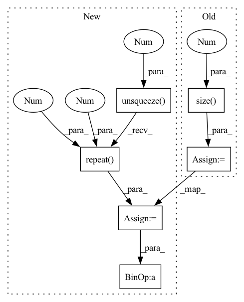

Pattern ID :23056

Before Change
sequence_length_padding_divisor = 4
// Pad attention mask to more divisible length
remainder = attention_mask.size(-1) % sequence_length_padding_divisor
if remainder != 0:
pad_length = sequence_length_padding_divisor - remainder
After Change
if attention_mask is not None:
// make sure padded tokens output 0
expand_attention_mask = attention_mask.unsqueeze(-1).repeat(1, 1, hidden_states.shape[2])
hidden_states[~expand_attention_mask] = 0
// extend attention_mask
attention_mask = (1.0 - attention_mask[:, None, None, :].to(dtype=hidden_states.dtype)) * -10000.0
attention_mask = attention_mask.expand(
attention_mask.shape[0], 1, attention_mask.shape[-1], attention_mask.shape[-1]
)
position_embeddings = self.pos_conv_embed(hidden_states)
hidden_states = hidden_states + position_embeddings
hidden_states = self.layer_norm(hidden_states)
hidden_states = self.dropout(hidden_states)
for layer in self.layers:
if output_hidden_states:
all_hidden_states = all_hidden_states + (hidden_states,)
layer_outputs = layer(hidden_states, attention_mask=attention_mask, output_attentions=output_attentions)
// add LayerDrop (see https://arxiv.org/abs/1909.11556 for description)
dropout_probability = torch.rand(tuple())
skip_the_layer = torch.tensor(self.training) and (dropout_probability < self.config.layerdrop)
if self.config.layerdrop > 0.0:
hidden_states = torch.where(skip_the_layer, hidden_states, layer_outputs[0])
else:
hidden_states = layer_outputs[0]
if skip_the_layer:
layer_outputs = (None, None)
if output_attentions:
all_self_attentions = all_self_attentions + (layer_outputs[1],)
if output_hidden_states:
all_hidden_states = all_hidden_states + (hidden_states,)
if not return_dict:
return tuple(v for v in [hidden_states, all_hidden_states, all_self_attentions] if v is not None)
In pattern: SUPERPATTERN
Frequency: 3
Non-data size: 6
Instances
Fragment ID: 73048123
Project Name: huggingface/optimum-graphcore
Commit Name: 075200de7b5b118681fc46af97985bb53ce9c146
Time: 2022-08-03
Author: gejinchen1996@gmail.com
File Name: optimum/graphcore/models/wav2vec2/ipu_layer_drop.py
M Class Name: IPUWav2Vec2Encoder
N Class Name: IPUWav2Vec2Encoder
M Method Name: forward(6)
N Method Name: forward(6)
M Parent Class: Wav2Vec2Encoder
N Parent Class: Wav2Vec2Encoder
M File Name: optimum/graphcore/models/wav2vec2/ipu_layer_drop.py
N File Name: optimum/graphcore/models/wav2vec2/ipu_layer_drop.py
M Start Line: 41
M End Line: 108
N Start Line: 41
N End Line: 83
'>
Before Change
sequence_length_padding_divisor = 4
// Pad attention mask to more divisible length
remainder = attention_mask.size(-1) % sequence_length_padding_divisor
if remainder != 0:
pad_length = sequence_length_padding_divisor - remainder
After Change
if attention_mask is not None:
// make sure padded tokens are not attended to
expand_attention_mask = attention_mask.unsqueeze(-1).repeat(1, 1, hidden_states.shape[2])
hidden_states[~expand_attention_mask] = 0
// extend attention_mask
attention_mask = (1.0 - attention_mask[:, None, None, :].to(dtype=hidden_states.dtype)) * -10000.0
attention_mask = attention_mask.expand(
attention_mask.shape[0], 1, attention_mask.shape[-1], attention_mask.shape[-1]
)
position_embeddings = self.pos_conv_embed(hidden_states)
hidden_states = hidden_states + position_embeddings
hidden_states = self.dropout(hidden_states)
for layer in self.layers:
if output_hidden_states:
all_hidden_states = all_hidden_states + (hidden_states,)
layer_outputs = layer(hidden_states, attention_mask=attention_mask, output_attentions=output_attentions)
// add LayerDrop (see https://arxiv.org/abs/1909.11556 for description)
dropout_probability = torch.rand(tuple())
skip_the_layer = torch.tensor(self.training) and (dropout_probability < self.config.layerdrop)
if self.config.layerdrop > 0.0:
hidden_states = torch.where(skip_the_layer, hidden_states, layer_outputs[0])
else:
hidden_states = layer_outputs[0]
if skip_the_layer:
layer_outputs = (None, None)
if output_attentions:
all_self_attentions = all_self_attentions + (layer_outputs[1],)
hidden_states = self.layer_norm(hidden_states)
'>
Fragment ID: 73048121
Project Name: huggingface/optimum-graphcore
Commit Name: 075200de7b5b118681fc46af97985bb53ce9c146
Time: 2022-08-03
Author: gejinchen1996@gmail.com
File Name: optimum/graphcore/models/wav2vec2/ipu_layer_drop.py
M Class Name: IPUWav2Vec2EncoderStableLayerNorm
N Class Name: IPUWav2Vec2EncoderStableLayerNorm
M Method Name: forward(6)
N Method Name: forward(6)
M Parent Class: Wav2Vec2EncoderStableLayerNorm
N Parent Class: Wav2Vec2EncoderStableLayerNorm
M File Name: optimum/graphcore/models/wav2vec2/ipu_layer_drop.py
N File Name: optimum/graphcore/models/wav2vec2/ipu_layer_drop.py
M Start Line: 127
M End Line: 193
N Start Line: 101
N End Line: 144
'>
Before Change
output_audio, _ = self.RNNs[1](X_audio)
output_visual, _ = self.RNNs[2](X_visual)
batch_size = output_text.size(0)
// (batch, num_directions * hidden_size)
output_text = output_text[:, -1, :]
output_audio = output_audio[:, -1, :]
output_visual = output_visual[:, -1, :]
// (num_classes, 300)
text_emo_vecs = self.textEmoEmbs(torch.LongTensor(list(range(self.num_classes))))
visual_emo_vecs = self.affineVisual(text_emo_vecs)
audio_emo_vecs = self.affineAudio(text_emo_vecs)
text_emo_vecs = text_emo_vecs.unsqueeze(0).repeat(batch_size, 1, 1)
visual_emo_vecs = visual_emo_vecs.unsqueeze(0).repeat(batch_size, 1, 1)
audio_emo_vecs = audio_emo_vecs.unsqueeze(0).repeat(batch_size, 1, 1)
text_attn_feature = self.attention(output_text, text_emo_vecs)
visual_attn_feature = self.attention(output_visual, visual_emo_vecs)
audio_attn_feature = self.attention(output_audio, audio_emo_vecs)
After Change
output_text, _ = self.RNNs[0](X_text)
output_text = output_text[:, -1, :]
text_emo_vecs_origin = self.textEmoEmbs(torch.LongTensor(list(range(self.num_classes))).to(self.device))
text_emo_vecs = text_emo_vecs_origin.unsqueeze(0).repeat(batch_size, 1, 1)
text_attn_weights = self.attention(output_text, text_emo_vecs)
logits = text_attn_weights if logits is None else logits + text_attn_weights
if "a" in self.modalities:
output_audio, _ = self.RNNs[1](X_audio)
'>
Fragment ID: 73048117
Project Name: wenliangdai/modality-transferable-mer
Commit Name: b0e565d11d6b3bf9f65fb1dcbdc8c641a2bc8054
Time: 2020-06-10
Author: wenliang.dai.1995@gmail.com
File Name: src/models/temp.py
M Class Name: EmotionEmbAttnModel
N Class Name: EmotionEmbAttnModel
M Method Name: forward(4)
N Method Name: forward(4)
M Parent Class: nn.Module
N Parent Class: nn.Module
M File Name: src/models/temp.py
N File Name: src/models/temp.py
M Start Line: 53
M End Line: 79
N Start Line: 70
N End Line: 96